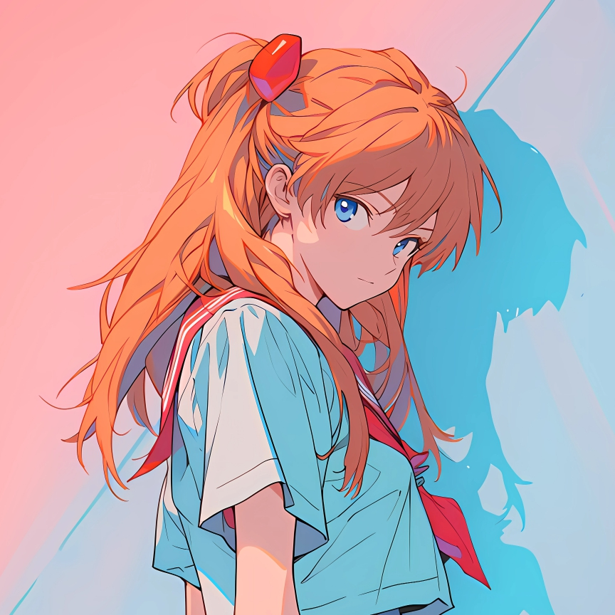

Neon Genesis Evangelion
Soryu Asuka Langley
惣流·明日香·兰格雷
Asuka is the Second Child and the pilot of Evangelion Unit-02. She is skilled and competitive, and much of her self-worth depends on being good at piloting.
She often acts certain of herself, even when she fears being unwanted or replaced. As piloting becomes harder for her, that fear becomes harder to hide.
About Asuka
Asuka as a Pilot
Evangelion Unit-02
Asuka wants to be the best pilot and is quick to challenge the others. Unit-02 is central to how she sees herself, which makes each setback feel personal.
Outside the Cockpit
Asuka can be blunt and difficult to get along with. She wants people close to her, but often pushes them away before they can see how much she needs them.
About Eva
Neon Genesis Evangelion
Neon Genesis Evangelion is a 1995 anime created by Hideaki Anno. Teenagers pilot biomechanical Evangelions to defend Tokyo-3 against beings known as Angels.
Between the battles, the series follows the pilots' strained relationships with their parents, each other, and the adults giving them orders. Much of the story concerns how they cope with loneliness and the need for approval.